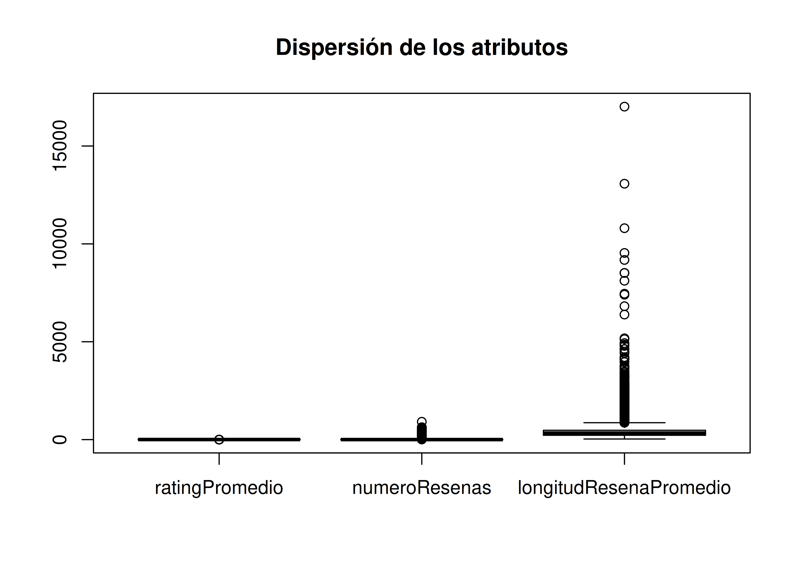
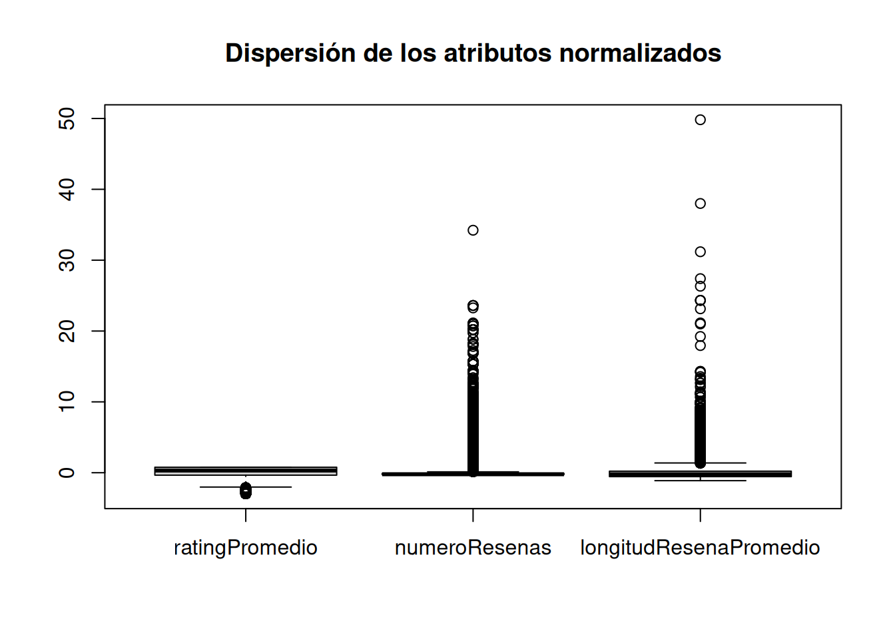
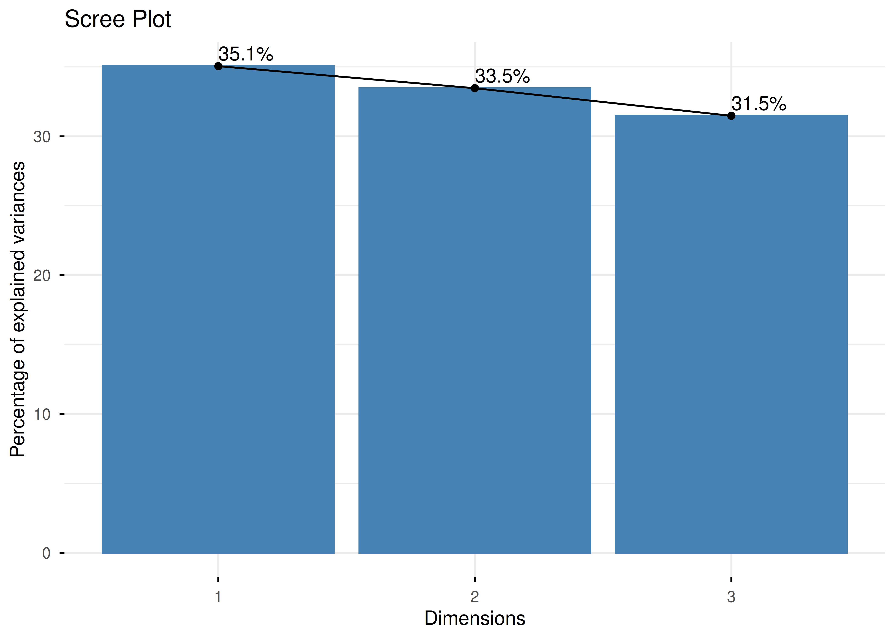
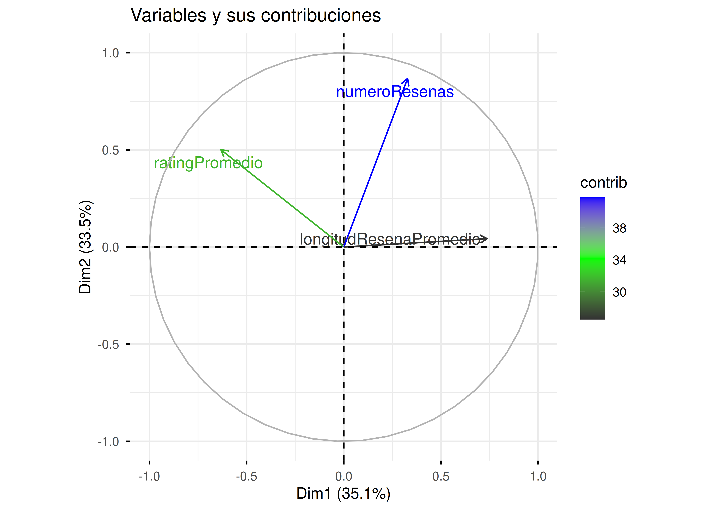
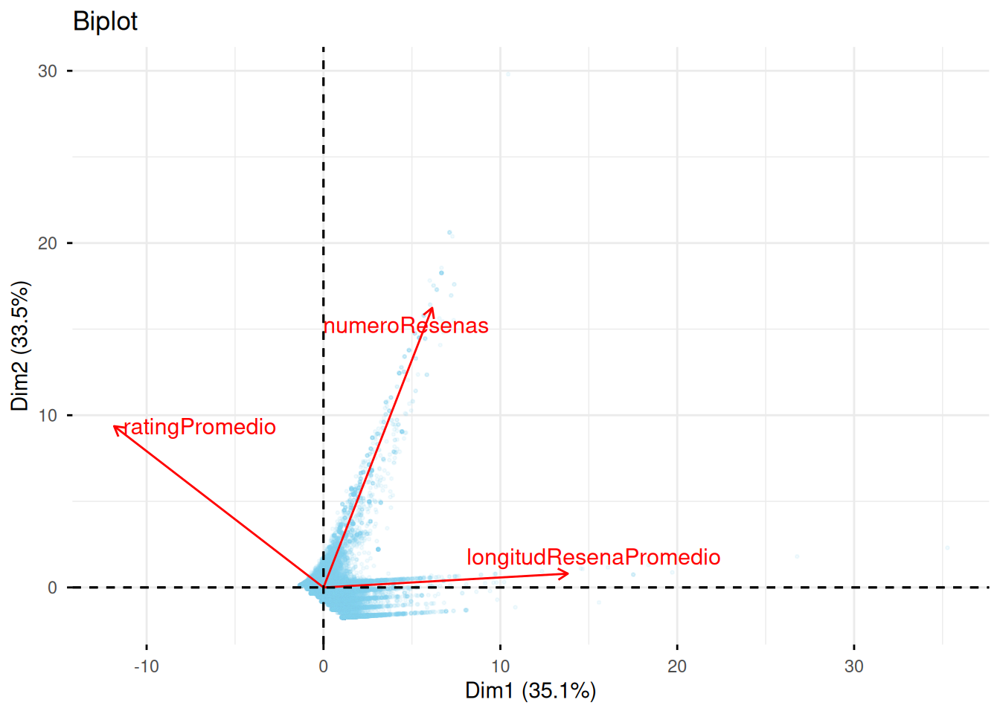

library(tidyverse)
library(factoextra)
library(patchwork)
library(corrplot)
library(data.table)
df <- fread("../data/Reviews.csv")1 Bloque 1: Análisis de Componentes Principales (PCA)
1.1 Desarrollo del bloque
1.1.1 Carga de librerías
En esta primera fase, el objetivo es extraer las dimensiones latentes que definen el éxito de un producto.
1.1.2 Análisis exploratorio de datos
Una vez cargados los datos en el entorno de trabajo, procedemos a realizar una inspección de los 10 atributos que componen el dataset. Según la documentación de Kaggle, estas variables recogen la siguiente información:
- Id: Atributo numérico. Identificador único de la reseña.
- ProductId: Atributo nominal (alfanumérico). Identificador único de un producto.
- UserId: Atributo nominal (alfanumérico). Identificador único del autor de la reseña.
- ProfileName: Atributo nominal. Nombre de perfil del usuario que ha hecho la reseña.
- HelpfulnessNumerator: Atributo numérico discreto. Cantidad de votos que califican la reseña como “útil”.
- HelpfulnessDenominator: Atributo numérico discreto. Cantidad total de votos recibidos por la reseña (útiles y no útiles).
- Score: Atributo numérico ordinal. Calificación del producto en una escala de 1 a 5.
- Time: Atributo numérico (timestamp). Segundo exacto de la creación de la reseña.
- Summary: Texto. Resumen de la reseña.
- Text: Texto. Contenido completo de la reseña.
Podemos darnos cuenta que no tenemos ningún atributo relativo al precio, por lo que obtener alguna métrica del mismo no será posible.
Primero vamos a comprobar si tenemos algún valor faltante en el dataset:
sum(is.na(df))[1] 4Vemos que tenemos 4 valores nulos, son muy pocos y eliminarlos no afectaría casi nada al dataset, ya que tenemos más de medio millón de registros, por lo que vamos a eliminarlos:
df <- drop_na(df)Una vez asegurados que no tenemos ningún valor faltante, analicemos ahora cada atributo y mostremos una tabla con algunas métricas:
metricas <- df |>
group_by(ProductId) |>
summarise(
ratingPromedio = round(mean(Score), 1),
numeroResenas = n(),
longitudResenaPromedio = round(mean(nchar(Text)))
) |>
select(-ProductId)
head(metricas)# A tibble: 6 × 3
ratingPromedio numeroResenas longitudResenaPromedio
<dbl> <int> <dbl>
1 4.4 37 428
2 5 1 378
3 3.5 2 235
4 5 1 342
5 4.8 173 379
6 4.8 173 379Tras generar las métricas, nos damos cuenta de un problema, y es la escala en la que están los datos. Por ejemplo, el valor de ratingPromedio va de 1 a 5, mientras que el longitudResenaPromedio toma valores significativamente mayores. Como PCA es sensible a estos cambios bruscos de escala, lo suyo sería hacer una normalización a los datos. Veamos gráficamente la dispersión de los datos:
1.1.3 BoxPlot
boxplot(metricas,
main = "Dispersión de los atributos"
)
Visualmente podemos ver que el atributo de longitudResenaPromedio es mucho más disperso a los demás. Como comentamos antes, estos atributos no están en la misma escala, asi que ahora vamos a normalizarlos y veamos un nuevo boxplot:
metricas <- scale(metricas)
boxplot(metricas,
main = "Dispersión de los atributos normalizados"
)
1.1.4 Scree Plot
Aunque ahora tampoco veamos mucha diferencia, el eje \(Y\) se mueve ahora en un rango de hasta 50, cuando antes era hasta 15000. Aunque sigan existiendo muchos outliers, las métricas están ahora en un rango mucho más manejable para PCA. Apliquemos PCA:
pca <- prcomp(metricas)
summary(pca)Importance of components:
PC1 PC2 PC3
Standard deviation 1.0255 1.0020 0.9718
Proportion of Variance 0.3506 0.3347 0.3148
Cumulative Proportion 0.3506 0.6852 1.0000fviz_eig(pca, addlabels = TRUE, title = "Scree Plot")
Analizando el Scree Plot, las dos primeras PC explican un 35.1% y un 33.5% de la varianza. Este conjunto nos permite retener un 68.5% de la información.
Además, el criterio de Kaiser establece que solo deben mantenerse las PC cuyos autovalores sean mayores que 1 (ya que esto indica que la componente explica más varianza que una variable original individual). Para obtener los autovalores, que son las varianzas, basta con elevar al cuadrado las desviaciones típicas de PCA:
pca$sdev^2[1] 1.051698 1.003976 0.944326Al observar que únicamente los dos primeros autovalores superan el umbral de 1, trabajaremos con las dos primeras PC. Para ver que representa cada PC, analizamos la matriz de rotación:
pca$rotation PC1 PC2 PC3
ratingPromedio -0.6164844 0.49923653 -0.6088594
numeroResenas 0.3200732 0.86540884 0.3855135
longitudResenaPromedio 0.7193748 0.04278349 -0.6933033fviz_pca_var(pca,
col.var = "contrib",
gradient.cols = c("gray20", "green", "blue"),
repel = TRUE,
title = "Variables y sus contribuciones")
Analicemos cada PC: - PC1: Existe una correlación inversa entre la longitud de la reseña y la valoración del producto. Productos con reseñas más largas tienden a tener una valoración mucho menor, ya que los clientes detallan las quejas y críticas. Esta componente muestra la relación entre cantidad y calidad. - PC2: Existe una correlación directa entre el número de reseñas de un producto y su valoración. Productos con mayor número de reseñas, mayor valoración llegan a tener. Esta componente muestra la relación que a mayor consumo, mayor satisfacción. - PC3: Existe una correlación directa entre la valoración del producto y la longitud de su reseña, contrastadas con el número de ventas. Productos con peores valoraciones tienen reseñas más cortas pero con muchas ventas. Esta componente muestra la relación que hay en artículos malos que se compran mucho pero hacen que el cliente no escriba una reseña elaborada.
1.1.5 Biplot
Finalmente, para validar la distribución espacial de las muestras y contrastarlo con las nuevas componentes, recurrimos a la proyección del Biplot:
fviz_pca_biplot(pca,
geom.ind = "point",
repel = TRUE,
col.var = "red",
col.ind = "skyblue",
title = "Biplot",
pointsize = 0.5,
alpha.ind = 0.1
)
En el Biplot enseñaremos la distribución de los productos en este nuevo espacio dimensional. Se observa cómo los productos se dispersan siguiendo las direcciones de las flechas: los productos situados en el cuadrante de longitudResenaPromedio coinciden con aquellos de menor ratingPromedio, confirmando la tendencia de quejas detalladas identificada en el PC1.
1.2 Interacción con IA
A continuación, se presenta un registro de los hitos más relevantes de la interacción con la IA, omitiendo las consultas redundantes y priorizando aquellos puntos donde la intervención humana fue crítica para el diseño del proyecto:
1.2.1 Consulta 1
- Prompt:
“El último apartado del 2.1 menciona: ‘Justificad la retención de varianza mediante el criterio de Kaiser o el gráfico de sedimentación…’. ¿Qué es el criterio de Kaiser y el gráfico de sedimentación? No lo he dado en teoría y se debe de buscar información y hacerlo.”
- Respuesta errónea o ineficiente de la IA:
Si ves que del PC1 al PC2 hay una caída enorme, pero del PC2 al PC3 la línea se vuelve casi plana (como si fuera “sedimento” o escombros en la base de una montaña)
Bajo esta lógica, ¿cuál crees que es el valor mínimo de varianza (autovalor) que debería tener un componente para que merezca la pena conservarlo?
Antes de buscar la fórmula matemática, justifícame: ¿Por qué crees que es preferible perder un poco de información (varianza) a cambio de trabajar con solo 2 ejes en lugar de los 4 originales?.
- Crítica:
La IA fue muy poco eficiente para el ritmo que requería la práctica. En lugar de darme la definición técnica directa o decirme qué comandos escribir en R para resolver el apartado (aunque no se lo pedí explícitamente), empezó a darme explicaciones usando metáforas sobre “piedras y escombros que se caen en la base de una montaña” y a devolverme preguntas para que yo adivinase la respuesta.
Aunque las metáforas pueden ayudar a entender la idea de forma superficial, este tipo de explicaciones resulta ineficiente para el desarrollo de la entrega.
Además, a pesar de haberle indicado explícitamente que estos temas no se habían profundizado en clase y que necesitaba buscar información clara para poder realizar el bloque, la IA complicó la respuesta haciéndola mucho más rebuscada de lo que realmente era.
- Solución:
Tuve que frenar a la IA y exigirle la respuesta directa con un segundo prompt (consulta 2). No obstante, debido a que su planteamiento inicial fue confuso y poco útil para comprender directamente el criterio de Kaiser, decidí contrastar la información investigando de forma independiente en fuentes externas de internet para asegurar la correcta asimilación del concepto.
1.2.2 Consulta 2
- Prompt:
“No te he preguntado eso, te he dicho que me expliques que es el criterio de Kaiser y qué es un gráfico de sedimentación”
- Respuesta errónea o ineficiente de la IA:
Para plantearme un caso imaginario, la IA redactó el siguiente ejemplo:
“Si tu gráfico de sedimentación muestra un ‘codo’ muy claro en el segundo componente, pero el tercer componente tiene un valor de varianza de 1.1, ¿a qué criterio le darías más peso…?”
- Crítica:
Este escenario que se inventó la IA es una imposibilidad matemática En nuestro análisis tenemos exactamente 3 variables normalizadas, por lo que toda la información junta (la varianza total) tiene que sumar exactamente 3. Además, por reglas matemáticas, los componentes van siempre ordenados obligatoriamente de mayor a menor (\(PC1 \ge PC2 \ge PC3\)).
Si el componente 2 marca el “codo” (lo que significa que la información ya ha caído al suelo), es imposible que el componente 3 vuelva a subir y valga 1.1. Si el tercero valiera 1.1, los dos primeros tendrían que valer al menos 1.1 cada uno, y la suma de los tres superaría el límite total de 3 de nuestro sistema. La IA inventó una gráfica que subía y bajaba saltándose las reglas básicas del álgebra.
- Solución:
Detecté este fallo lógico de la IA, ignoré su caso inventado y preferí guiarme por los resultados reales que me devolvía R. Al ejecutar el comando pca$sdev^2, comprobé que mis números iban en orden decreciente perfecto (\(35.1\% \rightarrow 33.5\% \rightarrow 31.4\%\)) y que el tercer valor caía por debajo de 1. Así demostré que en los datos reales de nuestro proyecto el método del codo y el de Kaiser se complementan perfectamente sin dar ningún error.